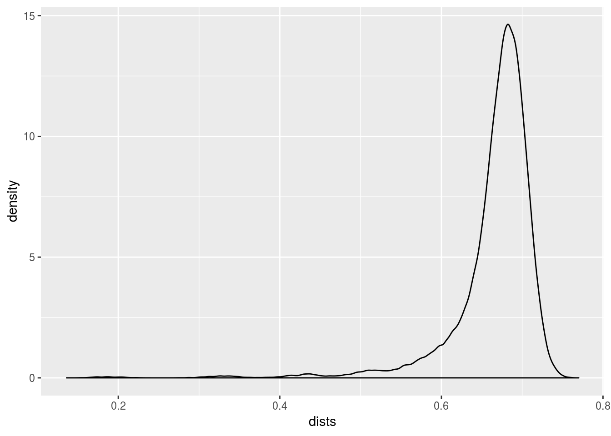

Basic concepts of quasispecies simulation
1 Simple first simulation
A first simulation to demonstrate the process and the measuring tools. Table 1.1 shows the configuration that was used to call sim_pop from the yasss package.
| Argument | Value |
|---|---|
| Number of Ancestors | 1 |
| Sequence Length | 500 |
| r0 | 2 |
| Number of Generations | 9 |
| Minimum Population Size | Inf |
| Mutator Function | mutator_uniform_fun |
| Mutator: mu | 0.1 |
| Fitness Evaluator | fitness_evaluator_uniform_fun |
| Additional Fitness Evaluator Arguments | None |
| Gen. Num. | n | Dist. to Ances. | Normalized Dist. | Fitness Score | Min. Fitness Score |
|---|---|---|---|---|---|
| 0 | 1 | 0.0000 | 0.0000000 | 0.7639438 | 0.7639438 |
| 1 | 2 | 40.5000 | 0.0810000 | 0.6570249 | 0.6570249 |
| 2 | 4 | 88.0000 | 0.1760000 | 0.7883320 | 0.7883320 |
| 3 | 8 | 126.8750 | 0.2537500 | 0.4587056 | 0.4587056 |
| 4 | 16 | 158.8125 | 0.3176250 | 0.5567692 | 0.5567692 |
| 5 | 32 | 188.4062 | 0.3768125 | 0.4963151 | 0.4963151 |
| 6 | 64 | 213.2969 | 0.4265938 | 0.5747522 | 0.5747522 |
| 7 | 128 | 234.5625 | 0.4691250 | 0.4962189 | 0.4962189 |
| 8 | 256 | 253.1250 | 0.5062500 | 0.4701994 | 0.4701994 |
| 9 | 512 | 269.8145 | 0.5396289 | 0.4931343 | 0.4931343 |
1.1 Last Generation
The average pairwise HD is 332.68 and normalized by the length of the sequence it is 0.665.

Figure: Density plot of the pariwise distances in the last generation.
| Decile | Value |
|---|---|
| 0% | 0.136 |
| 10% | 0.614 |
| 20% | 0.646 |
| 30% | 0.660 |
| 40% | 0.670 |
| 50% | 0.676 |
| 60% | 0.684 |
| 70% | 0.690 |
| 80% | 0.698 |
| 90% | 0.708 |
| 100% | 0.770 |